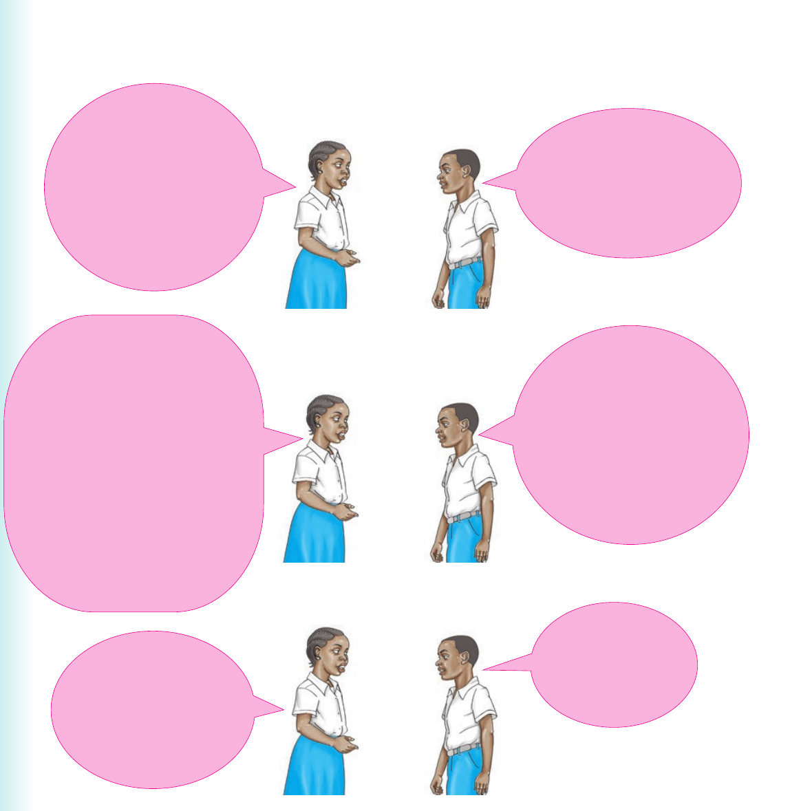

Narrating a birthday party
Oh! That is very bad.

3. Practise the following dialogue about a birthday party: Hello, Ima. Did you attend Anna's birthday? No, I didn't. How did it go? We had a lot of fun. We sang and danced together. We also had delicious food and drinks. Wonderful. I must have missed a lot. When did it end? We finished in the evening. Okay.
Questions about events and incidents
Activity 2
Practise asking and answering the following questions: 1. What do people do at the party? 2. What do people do at the football match? 3. What happens during floods? 4. What do people do during a church service? 5. What do people do at the mosque?